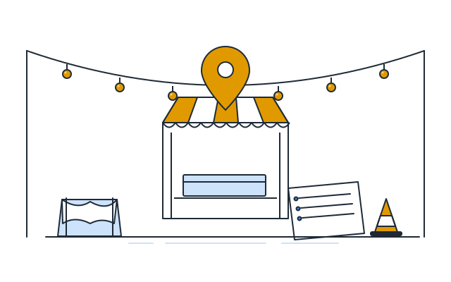

Color the map by
on an average
Plan
markets for summer 2027, aiming for
Keep markets
apart for 3 weeks, and reach
of the 5 city areas.
27 Saturdays

The recommendation comes after the model runs
This tab will show which neighborhoods and dates the model picks, and how often they stay picked when the assumptions change.